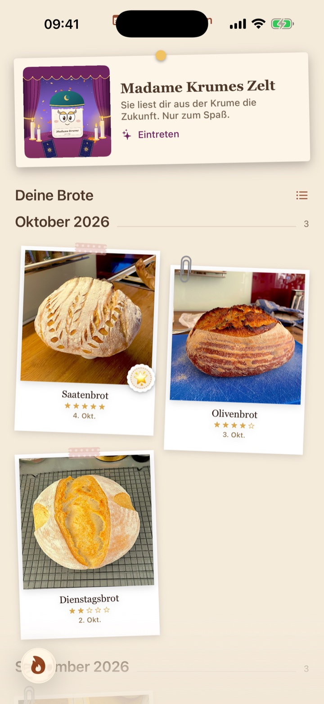
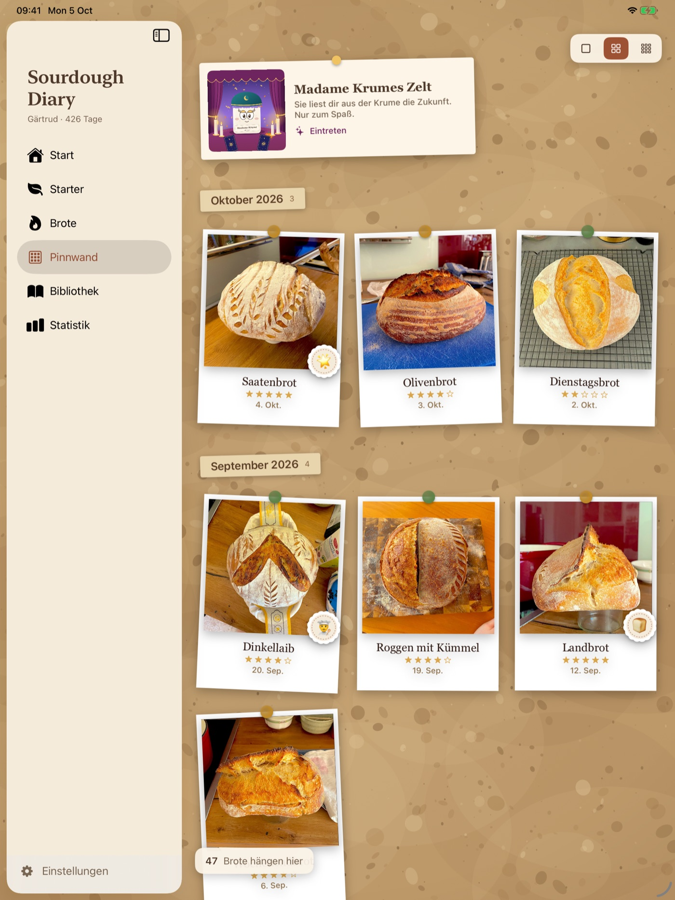
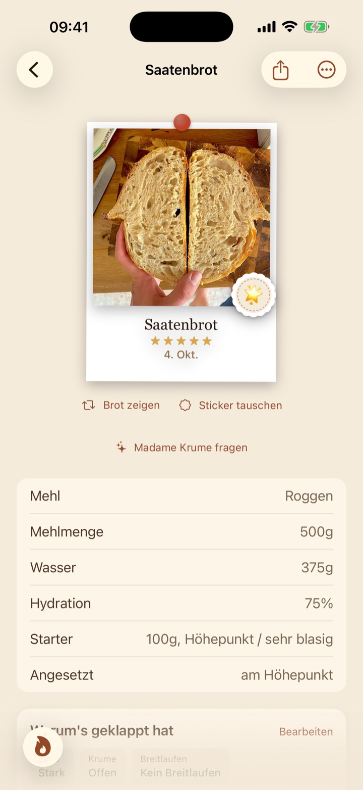
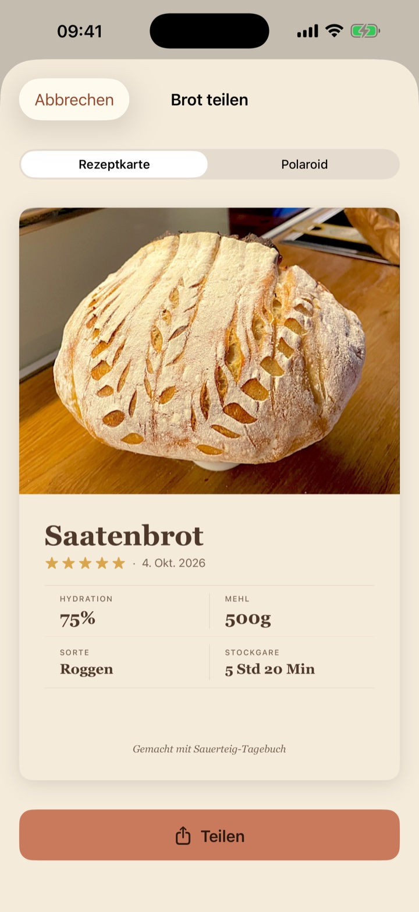
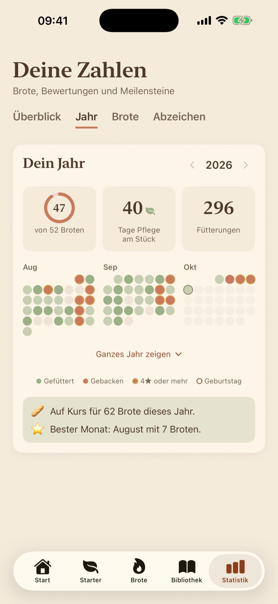
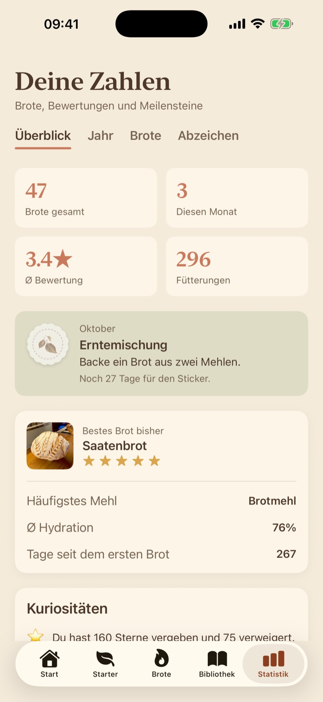
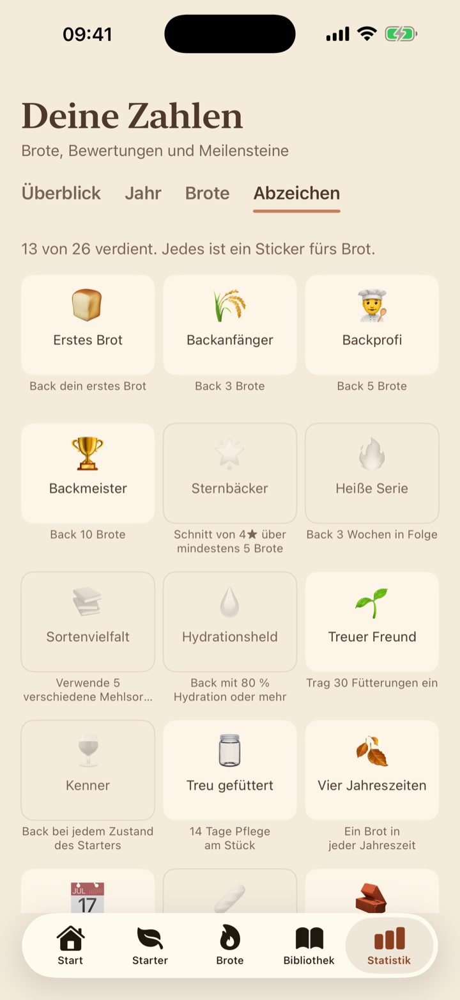
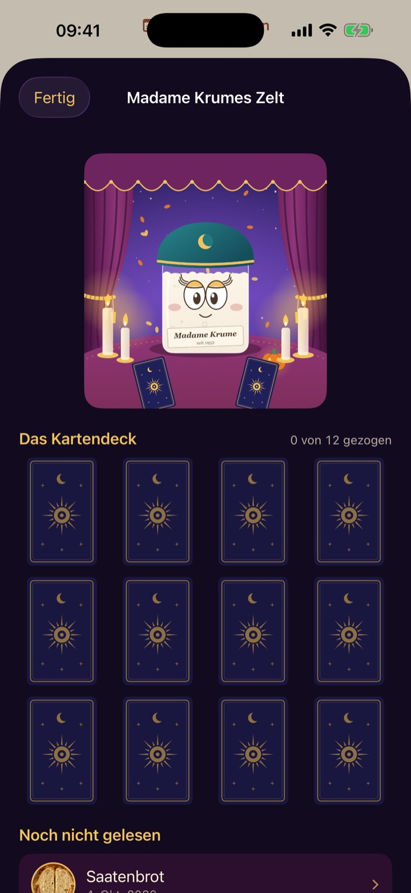

Jedes Brot, aufgeschrieben
Ein Tagebuch über alles, was du gebacken hast.

Die Pinnwand
Jedes fertige Brot, als Polaroid an der Wand. Am iPad ist es eine ganze Korkwand.

Vorne und hinten
Vorne das Brot, hinten die Krume.
Neig das Handy, und die Fotos an der Wand schaukeln. Dreh eines um für das Krumenfoto, oder schick es jemandem als Karte.


Dein Jahr
Ein Kalender aus jeder Fütterung und jedem Brot.
Serien, dein bester Monat, und auf wie viele Brote du dieses Jahr zusteuerst.

Zahlen, die ehrlich bleiben
Was deine besten Brote gemeinsam haben.
Wenn die Statistik etwas über dein Backen sagt, hat sie vorher geprüft, dass das Muster kein Zufall ist. Wenn sie es nicht weiß, sagt sie das.

Sticker zum Verdienen
Sechsundzwanzig Abzeichen, und jeden Monat eine neue Aufgabe. Jedes ist ein Sticker fürs Brot.

Madame Krume empfängt dich jetzt
Eine Prophezeiung für jedes Brot, und ein Deck zum Sammeln.
Ihr Zelt steht auf der Pinnwand. Füge ein Krumenfoto hinzu, und sie legt die Karten. Zwölf gibt es zu finden, und das Zelt wechselt mit der Jahreszeit.

Und die kleinen Dinge
- Was ist schiefgegangen?Jedes Brot gegen sein eigenes Protokoll gelesen, mit einer Sache zum Ändern.
- Ein FahndungsfotoFür die Brote, die es verdient haben.
- JahrestageHeute vor sechs Monaten hast du dieses gebacken.
- Sync und SicherungÜber deine eigene iCloud, mit einer Sicherung zum Aufheben.
- KuriositätenWie viele Sterne du vergeben hast, und wie viele verweigert.
- Geheime StickerEin paar verdient man nur, wenn etwas schiefgeht.
Dein Starter wartet
Laden im App Store Bald im App StoreDein Tagebuch synchronisiert über deine eigene iCloud, und du kannst eine Sicherung aufheben.